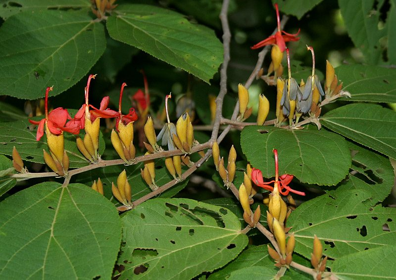

मरोड़फलीIndian Screw Tree
Helicteres isora · Malvaceae · FLR-0423

- Scientific name वैज्ञानिक नाम
- Helicteres isora L.
- Family कुल
- Malvaceae
- Hindi हिंदी
- मरोड़फली
- Local names स्थानीय नाम
- marorphali, marorphal, bhendu, indian screw tree
- Status here यहाँ की स्थिति
- native
- Movement आवागमन
- Resident, here all year
- Known from कहाँ दर्ज
- Others have published records from the wider Awadh–Purvanchal plain, none yet from Basti–Ayodhya अवध–पूर्वांचल से दूसरों के प्रकाशित अभिलेख, बस्ती–अयोध्या से अभी नहीं
- IUCN IUCN
- LC
- Review समीक्षा
- not yet reviewed
When to look कब देखें
Present all year. साल भर मौजूद।
Uses and possibilities उपयोग और संभावनाएँ
Drawn from the documented uses in the profile below, where each is labelled traditional, current or a research lead. All uses →
मरोड़फली / Indian Screw Tree
Helicteres isora L. — Malvaceae
मरोड़फली — तराई और विंध्य के पतझड़ी जंगलों में उगने वाली यह एक अत्यंत विशिष्ट जंगली झाड़ी है। इसके लाल-नारंगी फूल समय के साथ स्लेटी रंग में बदल जाते हैं, जो पक्षियों और मधुमक्खियों को खूब आकर्षित करते हैं। इसके पके फल आपस में रस्सी की तरह लिपटी पांच नलियों जैसे दिखते हैं, मानो किसी ने उन्हें पेच की तरह मरोड़ दिया हो। ग्रामीण चिकित्सा में इस पेचदार फल का उपयोग पेट दर्द और मरोड़ के इलाज में सदियों से किया जाता रहा है।
Quick Identification त्वरित पहचान
| Feature | Description |
|---|---|
| Habit | Large woody shrub or small tree with spreading branches covered in stellate hairs |
| Bark | Grey to pale brown, fibrous, yielding a tough jute-like cordage fibre |
| Leaves | Alternate, bifarious, obovate or rounded, unequally cordate, rough above, pubescent beneath |
| Flowers | Distinctly asymmetric, bright vermilion red turning leaden-grey with age |
| Fruit | Cylindrical, composed of 5 tightly twisted, spirally coiled tomentose follicles |
| Seeds | Numerous, angular, tubercled, enclosed within the twisted follicles |
Field tip: Look in the understorey of deciduous sal forest or dry ravine scrub. The distinctive screw-like coiled pods hanging in clusters on slender branches distinguish it from any other shrub in Uttar Pradesh.
हिंदी: इसके पत्ते छूने में खुरदरे और आरीदार होते हैं। शाखाओं पर लटके हुए रस्सी की तरह ऐंठे हुए भूरे फल इसकी सबसे स्पष्ट पहचान हैं।
Morphology आकारिकी
| Measurement / Trait | Range / Description |
|---|---|
| Growth-form | Large spreading woody shrub or small tree reaching understorey stature |
| Leaf-length | Upwards of 5 in. (Duthie 1903) |
| Leaf-shape | Bifarious, obovate or suborbicular, often obscurely lobed, unequally cordate |
| Calyx | Tubular, curved, laterally compressed, 5-toothed, hairy outside |
| Petals | Five, clawed, unequal, vermilion red turning to dull lead colour with age |
| Stamens | Fused with elongated gynophore, exserted and deflexed above |
| Fruit | Cylindrical capsule composed of 5 spirally twisted tomentose follicles |
A large shrub or small tree with rough young branches covered in scattered stellate hairs. The leaves are two-ranked, measuring obovate or rounded with serrated margins and rough pubescence.
The flowers are borne in axillary clusters. The corolla is bright scarlet or red when freshly opened, fading to dull leaden-grey as it matures. The staminal tube is fused with the elongated gynophore, holding the ovary aloft. The mature fruit consists of five woody follicles twisted spirally like a screw.
हिंदी: इसकी पत्तियां 5 in. से अधिक लंबी होती हैं। फूल पहले लाल और बाद में स्लेटी हो जाते हैं। फल पांच मुड़ी हुई नलियों से मिलकर बनता है जो पेंच जैसी दिखती हैं।
Behaviour & Ecology व्यवहार और पारिस्थितिकी
Indian screw tree is a characteristic component of the shrub layer in mixed deciduous forests, coping well with seasonal drought and periodic surface fires. Its deep root system allows survival on stony hillsides and dry ravines.
The asymmetric, tubular red blossoms are classic bird-pollinated flowers, producing abundant dilute nectar that attracts sunbirds, white-eyes, and bulvuls. Native honeybees and stingless bees also collect pollen from the reflexed stamens.
हिंदी: यह पौधा सूखे और पथरीले जंगलों में आसानी से जीवित रहता है। इसके लाल फूलों से मकरंद पीने के लिए शकरखोरा और अन्य छोटे पक्षी आते हैं।
Life Cycle / Phenology जीवन चक्र
Duthie (1903, p. 102) describes Helicteres isora as a shrub or small tree with red petals turning to lead colour.
The fruit is cylindrical, composed of five spirally twisted tomentose follicles on a long gynophore, with numerous seeds (Duthie 1903, p. 102).
हिंदी: दूथी (1903, पृ. 102) के अनुसार इसके फूल पहले लाल होते हैं और बाद में स्लेटी रंग में बदल जाते हैं। इसके फल पांच मुड़ी हुई नलियों के रूप में पेच की तरह ऐंठे होते हैं।
Associated Species / Interactions सहजीवी प्रजातियाँ
Commonly found in the understorey of साल (Shorea robusta), महुआ (Madhuca longifolia), and सेमल (Bombax ceiba) across northern and southern Uttar Pradesh woodlands.
Purple sunbirds (Cinnyris asiaticus) and oriental white-eyes (Zosterops palpebrosus) regularly feed on floral nectar. The fibrous bark and foliage support various wood-boring beetle larvae and leaf-rolling caterpillar species.
हिंदी: यह साल और महुआ के जंगलों के नीचे उगता है। शकरखोरा पक्षी इसके फूलों का रस पीते हैं और तितलियाँ इस पर शरण लेती हैं।
Pests and Diseases कीट और रोग
Subject to attacks by foliage-feeding chrysomelid beetles and leaf-miners that create pale blotches on older leaves during the post-monsoon period.
Wood-boring cerambycid larvae occasionally tunnel into mature main stems, causing branch dieback. The dry pods are sometimes infested by seed-eating weevils that bore exit holes through the woody spiralled walls.
हिंदी: पत्तियों पर कीड़े जाली बना सकते हैं और कभी-कभी घुन इसके सूखे बीजों में छेद कर देते हैं। अत्यधिक कटाई से भी झाड़ियाँ सूख जाती हैं।
Agricultural / Human Relevance कृषि प्रासंगिकता
Duthie (1903, p. 102) notes that a strong fibre resembling that of jute is obtained from the bark, and that the twisted fruit is used medicinally for intestinal disorders.
Chopra et al. (1956, p. 131) record under Helicteres isora (Hindi: Marorphali) that the fruit is astringent and used in griping bowels and flatulence of children, the bark in dysentery and diarrhoea, and the root in diabetes, empyema, stomach affections, and snake-bite.
हिंदी: दूथी (1903, पृ. 102) के अनुसार इसकी छाल से जूट जैसा मजबूत रेशा मिलता है और फल पेट के विकारों में प्रयुक्त होता है। चोपड़ा (1956, पृ. 131) के अनुसार फल, छाल और जड़ पेचिश, दस्त और पेट के विकारों में काम आते हैं।
Expected Locally स्थानीय रूप से अपेक्षित
Not a field record. Written from published accounts for eastern Uttar Pradesh. No confirmed local sighting yet — if you have seen it, that is what the atlas needs.
अभी तक स्थानीय पुष्टि नहीं। यह विवरण प्रकाशित स्रोतों से है, किसी अवलोकन से नहीं।
GBIF holds published records from the wider Awadh–Purvanchal plain, none yet from Basti–Ayodhya.
In Uttar Pradesh, this species is well-documented from the Terai forests of Bahraich, Shravasti, and Balrampur, as well as the Vindhyan tract of Mirzapur. A verified observation in Basti or Ayodhya districts would be confirmed by a photograph of the spiral fruit or red asymmetrical flowers, accompanied by locality and habitat information.
हिंदी: अवध के तराई वाले जंगलों में यह पौधा पाया जाता है, लेकिन बस्ती-अयोध्या के ग्रामीण इलाकों में अभी तक इसका सीधा प्रमाण नहीं मिला है।
Distribution वितरण
Widely distributed across tropical Asia, including India, Nepal, Sri Lanka, Myanmar, Thailand, Malaysia, Indonesia, and northern Australia.
In India, it occurs from the sub-Himalayan tract across the Gangetic plain, Central India, and the Western and Eastern Ghats. In northern India, it forms frequent understorey thickets along the foothills and protected wildlife sanctuaries of the Terai.
हिंदी: यह पूरे भारत, नेपाल, श्रीलंका, म्यांमार और ऑस्ट्रेलिया के उष्णकटिबंधीय जंगलों में मिलता है। उत्तर प्रदेश में यह तराई और दक्षिणी पठारी वनों में आम है।
Research Questions शोध प्रश्न
- What native bird species function as effective pollinators of Helicteres isora in the northern Terai understorey?
- Does the mechanical spiral twisting of the ripening pod enhance ballistic seed release during high wind events?
- क्या मरोड़फली की छाल का रेशा आधुनिक प्राकृतिक रेशे के रूप में जूट का विकल्प बन सकता है?
- How do recurrent woodland fires affect root crown sprouting and coppicing vigour in degraded forests?
- क्या इसके अर्क में एंटीबैक्टीरियल गुण पेट के जीवाणुओं के खिलाफ वैज्ञानिक रूप से प्रभावी हैं?
हिंदी: क्या इस झाड़ी के पेचदार फल केवल हवा से खुलते हैं या जानवरों के छूने से बीज छिटकते हैं, इस पर शोध की आवश्यकता है।
Similar Species मिलती-जुलती प्रजातियाँ
| Species | Key Differences | Habitat / Occurrence | |
|---|---|---|---|
| Grewia asiatica ([[phalsa\ | Phalsa]]) | Leaves serrate; flowers small, yellow; fruit a small dark purple globose edible drupe | Cultivated in orchards and gardens across the plains |
| Sterculia villosa (Udal) | Large tree with palmately lobed leaves; flowers yellow; follicles boat-shaped, not twisted | Moist deciduous forests along the sub-Himalayan belt | |
| [[sal | साल (Shorea robusta)]] | Canopy tree; winged samara fruit; simple leathery leaves | Dominant canopy tree of Terai and bhabar forests |
| [[mahua | महुआ (Madhuca longifolia)]] | Large tree with milky sap; fleshy edible corollas; rounded berry fruit | Common tree of plains, woodlands, and village borders |
Field rule: A forest shrub with rough leaves and unmistakably spiralled screw-like five-valved pods hanging from branchlets is Helicteres isora.
हिंदी: फालसा (Grewia) के पत्ते मिलते-जुलते होते हैं लेकिन उस पर गोल जामुनी फल आते हैं, जबकि मरोड़फली के फल रस्सी की तरह ऐंठे होते हैं।
Taxonomy & Classification वर्गीकरण
Original description. Described by Carl Linnaeus in 1753 in Species Plantarum, volume 2, page 963 (Helicteres isora L.). The generic name Helicteres derives from the Greek helikter (anything twisted), describing the spiral fruit.
Subspecies. Monotypic; no valid subspecies are recognized, though forms with varying leaf pubescence have been described as ecological varieties.
Family and order placement. Formerly placed in Sterculiaceae, now included in the expanded family Malvaceae (subfamily Helicteroideae), order Malvales.
IUCN status rationale. Evaluated as Least Concern (LC) due to its expansive geographic distribution across South and Southeast Asia, abundant populations, and presence in numerous protected reserves.
हिंदी: लीनियस ने 1753 में इसका नामकरण किया था। पहले इसे स्टरकुलियासी कुल में रखा गया था, अब यह मालवेसी कुल का हिस्सा है। व्यापक विस्तार के कारण यह संकटमुक्त (LC) है।
Photo Gallery फोटो गैलरी
No photos yet. (Contributions welcome!)
References संदर्भ
- Linnaeus, C. (1753). Species Plantarum, Tomus II. Impensis Laurentii Salvii, Holmiae, p. 963.
- Duthie, J. F. (1903). Flora of the Upper Gangetic Plain, and of the Adjacent Siwalik and Sub-Himalayan Tracts, Vol. 1, Part 1. Superintendent of Government Printing, Calcutta, p. 102.
- Kirtikar, K. R. & Basu, B. D. (1918). Indian Medicinal Plants, Part 1. Panini Office, Bhuwaneshwari Asrama, Bahadurganj, Allahabad, pp. 207–208.
- Chopra, R. N., Nayar, S. L. & Chopra, I. C. (1956). Glossary of Indian Medicinal Plants. Council of Scientific & Industrial Research, New Delhi, p. 131.
- IUCN Red List of Threatened Species (2026). Helicteres isora. Version 2025-2.
- GBIF Secretariat (2026). Helicteres isora L. GBIF Backbone Taxonomy. Checklist dataset https://doi.org/10.15468/39omei.
Source file: species/flora/shrubs/indian_screw_tree.md